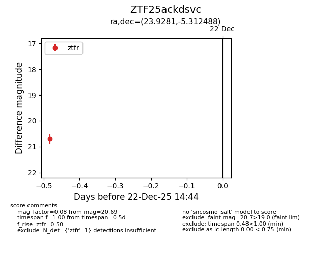
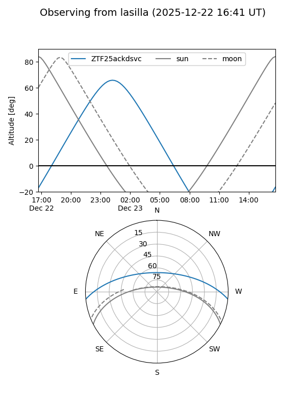
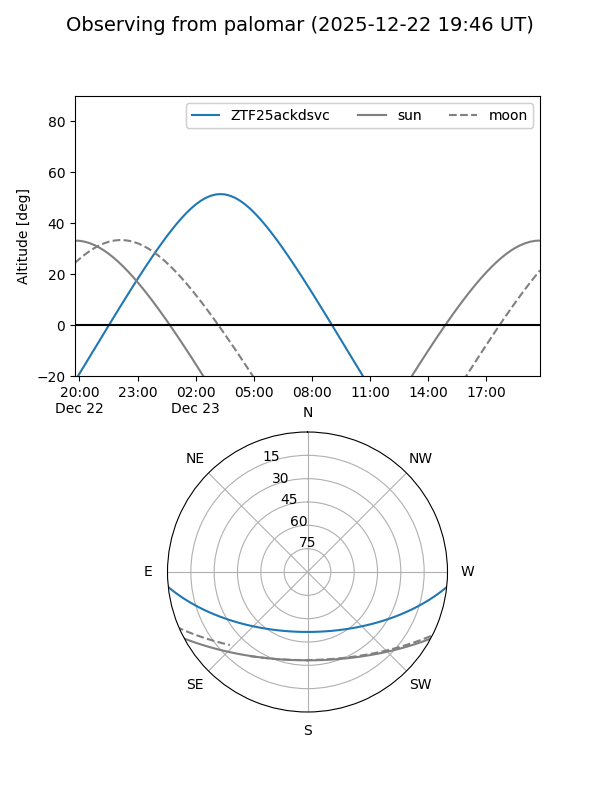

ZTF25ackdsvc
Target ZTF25ackdsvc at 2025-12-22 14:46
Aliases and brokers:
FINK: fink-portal.org/ZTF25ackdsvc
Lasair: lasair-ztf.lsst.ac.uk/objects/ZTF25ackdsvc
ALeRCE: alerce.online/object/ZTF25ackdsvc
alt names
ZTF25ackdsvc (ztf,fink_ztf)
Coordinates:
equatorial (ra, dec) = 23.9281,-5.31249
equatorial (HMS+DMS) = 01:35:42.74,-05:18:44.96
galactic (l, b) = (150.6922,-65.76913)
Flags:
Photometry:
last ztfr=20.69
1 ztfr detections
Lightcurve

Visibility


Additional plots